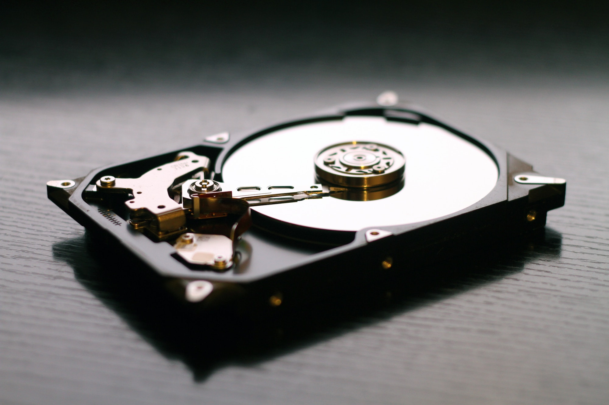

Жесткий диск(HDD и SSD) —
один из компонентов компьютера, предназначеный для энергонезависимого хранения информации (все созданные рабочие файлы хранятся именно на жестком диске). Также его называют винчестером или HDD.
Информационная емкость — это объем данных, которые может вместить жесткий диск. Измеряется в гигабайтах (Гб). Важно знать, что продавцы 1 Гб приравнивают 1000 Мб, а не 1024. Поэтому купив диск на 1 Тб (1024 Гб), мы увидим лишь 931 Гб.
Разъем для подключения к материнской плате. Как правило, это SATA или SAS. Последний, часто, используется в оборудовании серверного класса.
Форм-фактор — размер диска. Сейчас используют 2,5 и 3,5 дюйма. SSD идут всегда по 2,5 дюйма, если он подключается к SATA
Скорость вращения шпинделя — влияет на скорость чтения и записи данных. В ноутбуках, чаще, используются 4200, 5400 оборотов в минуту. В компьютерах — 7200. Большая скорость выдает большую производительность и вместе с этим и больший шум, меньшие же обороты соответственно наоборот
Тип
HDD (Hard Drive Disk) — традиционный тип накопителя, в котором данные записываются на вращающиеся магнитные диски. Недостатки таких накопителей связаны с их конструкцией. HDD боятся механических воздействий (тряски, ударов), особенно во время работы.
SSHD (Solid-State Hard Drive) накопитель может сохранять данные как на магнитные пластины, так и на встроенную флэш-память. В первую очередь информация записывается на флэш-память, а после ее заполнения переписывается на магнитный носитель. Такие накопители также называются гибридными.
При такой схеме работы повышается скорость переноса данных, увеличивается срок службы механики жесткого диска и снижается потребление электроэнергии.
SSD (solid-state drive) – твердотельный накопитель на основе технологий флеш-памяти. Быстрее HDD И SSHD, абсолютно бесшумны, так как не имеют движущихся элементов, так как микросхемы впаяны в плату.